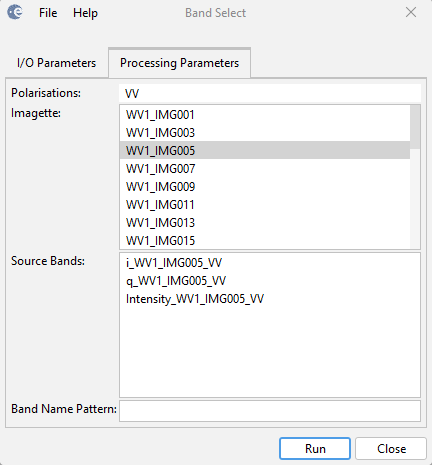

| Band Select |
|
The Band Select Operator allows users to create a new product containing only selected bands from the source product. This operator is useful for reducing the size of the dataset by including only the relevant bands.
For Sentinel-1 OCN L1 SLC products, the operator can be used to select specific imagettes. This enables producing an OCN SLC product similar to a stripmap product thereby allowing operators to process the product as a regular stripmap product.

The operator generates a new product containing the selected bands, along with updated metadata and tie-point grids.
To use the Band Select Operator, specify the desired parameters (e.g., polarisations, sub-images, source bands) and execute the operator. The resulting product will contain only the selected bands.
Example usage in a processing graph:
<node id="BandSelect">
<operator>BandSelect</operator>
<parameters>
<sourceBands>b1,b2</sourceBands>
<selectedPolarisations>VV,VH</selectedPolarisations>
<selectedSubImages>WV1_IMG</selectedSubImages>
</parameters>
</node>
GPT operator: BandSelect. Generated from the operator source; parameter names are those used in GPT and graph XML.
| Parameter | Type | Default | Allowed values | Unit | Description |
|---|---|---|---|---|---|
selectedPolarisations | String[] | The list of polarisations | |||
selectedSubImages | String[] | The list of imagettes or sub-images | |||
sourceBands | String[] | The list of source bands. | |||
bandNamePattern | String | Band name regular expression pattern | |||
sourceMasks | String[] | The source masks for the computation. | |||
includeReferences | boolean | true | Add dependent bands and masks |